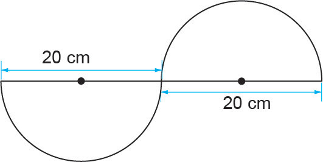
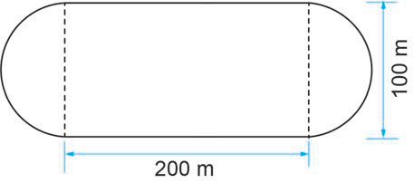

Exercise 1
Answer the following questions.
Use unless stated otherwise:
1.
Find the circumference of the circle using each of the following diameters:
(a) 98 cm
(b) 56 cm
(c) 9.1 dm
(d) 7 dm
2.
Find the diameter of the circle for each of the given circumferences:
(a) 44 m
(b) 132 m
(c) 220 mm
3.
In each of the following circumferences, find the radius of each circle:
(a) 968 dm
(b) 616 dm
4.
Find the circumference of three-quarters circle whose radius is 35 cm.
5.
Find the circumference of each circle with the following measurements:
(a) diameter = 80.5 cm
(b) radius = 210 mm
6.
The diameter of a car tyre is 63 cm.If the tyre rotates to cover a distance of 63.36 metres, how many complete rotations will the tyre make?
7.
Mr Baraka constructed a well with a diameter 7 m.During the early stages of its construction, there were pillars placed 2.2 m apart to strengthen the well.How many pillars were used in the construction of the well?
8.
Find the circumference of the following figure.
Use .

20 cm20 cm
9.
Find the circumferences of the following playing ground.
Use .

10.
Find the circumference of the semi-circular figures with the following diameters:
(a) 21 m
(b) 84 cm
11.
Find the circumference of a quarter circle with a radius 49 cm.
12.
The circumference of the circular base of a bowl is 110 mm.Find its diameter.